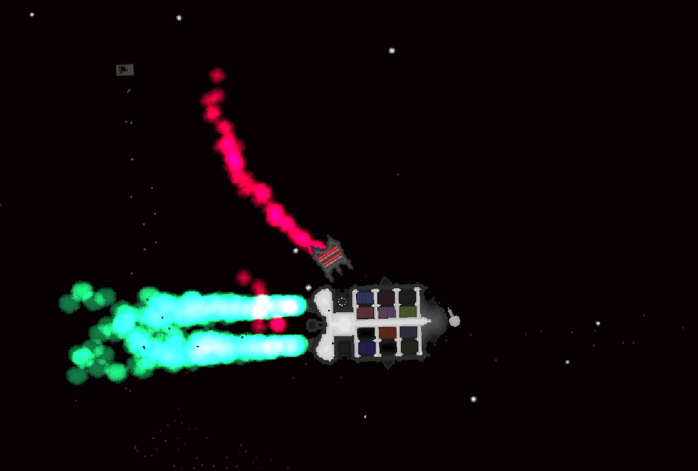

Stellar Transporter
Made in Groningen, 2020.
Stellar Transporter is a browser game, which puts you in charge of managing a space cargo ship.
It should work on any device, but is not optimized to for small phone screens.
Your mission is to make money by trading container goods at space stations and bringing them to others safely and selling them profitably.
In the beginning you start at a station with 1300 points worth of cargo loaded. It is recommended that as the first action you take in the game you sell the loaded cargo containers at the starting station and buy new ones with the money you get. Both selling and buying containers is done in the "station market".